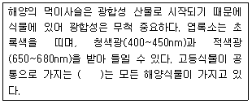
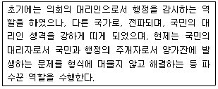
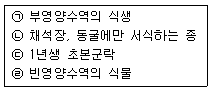
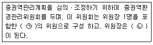
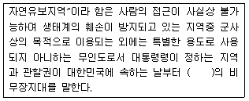
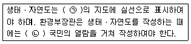

자연생태복원기사(구) (2017-05-07 기출문제)
1과목: 환경생태학개론
1. 생태조사의 기본목적과 거리가 먼 것은?
- 생태계의 보전
- 생태계의 보존
- 생태계의 복원
- 생태계의 대체
(정답률: 78%)

2. 다음에서 한 종이 다른 종을 먹이로 이용하는 영양상의 상호작용이 아닌 것은?
- 중립
- 초식
- 기생
- 포식
(정답률: 78%)
3. UNESCO의 MAB(Man and Biosphere Reserve)의 평가기준에서 “희귀종, 고유종, 멸종위기종이 많은 곳”으로 구분한 이지역은?
- 완충지역
- 전이지역
- 가치지역
- 핵심지역
(정답률: 79%)
4. 질소고정이 가능한 생물이 아닌 것은?
- Anabaena
- Nostoc
- Rhizobium
- chlorella
(정답률: 70%)
5. 하천은 발원지 상류에서부터 하류인 하구에 이르기까지 생물상이 단계적으로 변하는데, 이때 종의 수평구조가 나타난다. 또한 시간이 경과함에 따라 서식지나 생물상이 변하게 된다. 이와같은 현상은?
- 천이계열
- 지리적 천이
- 지사적 천이
- 타발천이
(정답률: 69%)
6. 적도를 중심으로 남위와 북위 각각 10°이내의 지역으로 남미의 아마존, 서부아프리카와 인도네시아 등의 지역에 나타나는 식생대는?
- 사막식생
- 툰드라
- 온대 초원
- 열대우림
(정답률: 80%)
7. 생태계의 제한 요인에서 식물의 생산성은 가장 많이 결핍된 단일원소의 양에 의해 결정된다는 법칙은?
- Shelford 제한법칙
- Bergmann의 최소량의 법칙
- Liebig의 최소량의 법칙
- Cause의 제한법칙
(정답률: 78%)
8. 생물종의 다양성이 감소하는 원인에 해당하지 않는 것은?
- 인구의 증가, 오염, 외래종의 유입
- 남용, 오염, 서식지의 물리적 변화
- 서식지의 파괴, 습지의 보전, 토종의 유지
- 인구의 증가, 외래종의 유입, 서식지의 외형적 변화
(정답률: 82%)
9. 호소의 산성화와 어류의 개체수 감소를 초래하는 것은?
- 산성비
- 지구온난화
- 온실효과
- 방사성 동위원소
(정답률: 77%)
10. 유기물이 분해되는 퇴비화 과정에 주로 관여하는 생물체는?
- 호기성미생물
- 혐기성미생물
- 정수성식물
- 원생조류
(정답률: 54%)
11. 우리나라에서 부영양화를 판정하는 기준으로 사용하는 블렌바이더의 영양상태 부류 방법 중 극빈영양상태를 나타내는 총인(mg/L)의 기준은?
- ＜ 0.20mg/L
- ＜ 0.⑤mg/L
- 0.0⑤~0.01mg/L
- ＞ 0.10mg/L
(정답률: 68%)
12. 흰개미 내장의 미생물(Trychonympha 속)과 흰개미와의 관계는?
- 경쟁
- 상리공생
- 기생
- 포식
(정답률: 78%)
13. 해양오염의 가장 큰 원인은?
- 해상교통
- 육지로부터의 오염원 유입
- 직접적인 해상투기
- 심해개발
(정답률: 79%)
14. 생태계 군집 구조를 측정하는 생물지수가 아닌 것은?
- 균등도
- 종풍부도
- 종다양도
- 종포화도
(정답률: 55%)
15. 다음 설명의 ( )에 들어갈 용어는?

- 엽록소 a
- 엽록소 b
- 엽록소 c
- 엽록소 e
(정답률: 66%)
16. 먹이그물의 상위단계에 있는 생물이 높은 독성물질을 체내에 축적하기 쉽다. 먹이연쇄단계를 거치면서 확산 희석되지 않고 오히려 농축되는 현상은?
- 영양단계농축
- 생물농축
- 물질농축
- 독성농축
(정답률: 69%)
17. 식물의 개화 강도가 일장 시간에 둔감하여 광주기와 상관없이 꽃을 피우는 식물은?
- 단일식물
- 중일식물
- 물질농축
- 독성농축
(정답률: 78%)
18. C. Darwin이 주장한 개체군의 크기를 제한할 수 있는 방법이 아닌 것은?
- 타 생물의 피식
- 기생충과 질병
- 물리적 제한요인
- 타 생물과의 공생
(정답률: 63%)
19. 더 나은 생존을 위해 특정한 두 종이 서로를 필요로 하는 생물종 간의 상호관계를 무엇이라 하는가?
- 편리공생
- 상존공생
- 상리공생
- 영양공생
(정답률: 80%)
20. 중금속에 오염된 토양을 완전히 원래의 상태로 되돌리는 방법으로 택할 수 있는 것은?
- 흡착 또는 특이식물 재배
- 흙갈이 객토
- 갈아엎기
- 혼층갈이
(정답률: 62%)
2과목: 환경계획학
21. 자연경관 우수지역의 지속가능한 개발 보전을 위한 원칙에 해당되지 않는 것은?
- 자연경관자원의 가치와 특성에 따른 차별성을 확보하여야한다.
- 자연경관보호 관련 행정에 해당 지역주민이 적극적으로 참여할 수 있도록 해야한다.
- 주민의 경제적 활동에 지장을 초래하는 규제행위를 무조건 보상할 수 있도록 해야한다.
- 근원적으로 개발행위가 발생하지 않도록 토지의 형질변경 등을 사전에 규제할 필요가 있다.
(정답률: 77%)
22. 생태ㆍ자연도 2등급 권역으로 평가되는 기준은?
- 식생보전등급 Ⅱ등급에 해당하는 지역
- 멸종위기 야생생물 Ⅱ급 종이 식생보전 등급 Ⅰ등급에서 Ⅲ등급 또는 임상도 3영급 이상 지역에 서식하는 경우
- 멸종위기 야생동식물이 2~5종 서식하는 습지
- 철새 한 종의 개체수의 1%이상이 도래하는 철새도래지
(정답률: 45%)
23. 환경용량의 개념을 생태학적 관점에서 세가지 측면으로 살펴볼 수 있다. 다음 중 세가지 측면에 해당되지 않는 것은?
- 환경의 자정능력
- 지역의 수용용량
- 자원의 지속가능성
- 생태적 안정성
(정답률: 40%)
24. 1809년 스웨덴이 최초로 창설한 것으로서 다음 설명에 해당하는 것은?

- 옴부즈만 제도
- 시민참여제도
- 주민정보공개 제도
- 권한위임 제도
(정답률: 77%)
25. 조성이론 중 틀린 것은?
- 지속가능성은 생물자원을 지속적으로 보전, 재생하여 생태적으로 영속성을 유지한다.
- 생물적 다양성은 유전자, 종, 소생물권 등의 다양성을 의미하여 생물학적 다양성과 생태적 안정성은 반비례한다.
- 생태적 건전성은 생태계 내 자체생산성을 유지함으로써 건전성이 확보되며 지속적으로 생물자원 이용이 가능하다.
- 최소한의 에너지 투입은 자연순환계를 형성하여 에너지, 자원, 인력 투입을 절감하고, 경제적 효율을 극대화할 수 있도록 계획한다.
(정답률: 69%)
26. 생태도시계획시 고려해야 될 생태적 원리에 해당되지 않는 것은?
- 다양성
- 위계성
- 순환성
- 자립성
(정답률: 66%)
27. 생물다양성의 유지,복원을 위한 환경계획으로 틀린 것은?
- 자연지역과 인위지역 사이에 완충지역을 배치한다.
- 인간의 이용을 중심으로 하는 구역과 자연지역을 별도 구분없이 계획해야한다.
- 자연지역을 가능한 크게 만들고 통로를 설치하여 생물적 네트워크를 확보하는 것이 중요하다.
- 생물다양성의 유지,복원을 위해 일정 수준 이상의 공간확보되어야 한다.
(정답률: 76%)
28. 환경계획 관련 국제협력 프로그램 중 람사르 협약에 대한 설명으로 옳은 것은?
- 1997년 이산화탄소를 비롯한 온실가스 방출을 제한하고자 하는 지구온난화방지를 위한 국제협약은 기후변화에 관한 유엔 기본협약이다
- 오존층 파괴물질의 규제에 관한 국제협약으로서 1989년 1월부터 발효되었으며, 정식명칭은 오존층을 파괴시키는 물질에 대한 몬트리올 의정서이다.
- 생물종의 멸종위기를 극복하기 위해서 체결된 국제협약으로, 유엔환경계획기구가 생물 다양성 문제에 대한 국제적 행동계획 수립을 결정하여 체결한 협약이 생물다양성 협약이다.
- 습지파괴를 저지하기 위해 1971년 물새 서식습지대를 국제적으로 보호하기 위한 국제협력 프로그램은 물새 서식지로서 특히 국제적으로 중요한 습지에 관한 협약으로 [자연자원의 보전과 현명한 이용]에 관해 맺어진 최초의 정부간 협약이다.
(정답률: 75%)
29. 1992년 브라질 리우 지구정상회의에서 채택된 생물다양성협약의 주요 목적에 해당하지 않는 것은?
- 생물다양성의 보존
- 다양한 생물다양성의 지속가능한 이용
- 유전자원이 이용에 의해 발생되는 이익의 공정한 배분
- 멸종위기에 처한 야생생물에 대한 상업적 국제거래 규제
(정답률: 32%)
30. 생태공원 내에서 이루어지는 환경교육 내용으로 적절하지 않은 것은?
- 환경교육을 위한 프로그램은 모든 이용자들에게 공통적이고 일반적인 내용으로 작성되는 것이 바람직하다.
- 자연현상, 환경,문화적 지식 등을 전달하기 위한 환경교육 전개수법으로서 해설 및 해설자의 역할이 중요하다.
- 해설자가 직접 수행하지 않는 팜플렛, 안내판, 전시물 등의 시설물도 간접적인 해설 서비스로 볼 수 있다.
- 체험학습은 가설적 사고를 실제 행동으로 실행함으로써 이해의 과정을 구조화하는데 바람직하다.
(정답률: 61%)
31. 교토의정서에 규정된 온실가스의 짝으로 틀린 것은?
- 이산화탄소(co2), 메탄(ch4)
- 아산화질소(n2o), 수소불화탄소(hfcs)
- 과불화탄소(pfcs), 육불화항(sf6)
- 일산화탄소(co), 이산화항(so2)
(정답률: 46%)
32. 하천유역의 면적,지형 등 하천유역의 특성에 따라 수계영향권을 구분하며, 이에 따라 구분된 대권역별 수질 및 수생태계 보전을 위한 기본계획은 몇 년 마다 수립되어야 하는가?
- 3년
- 5년
- 10년
- 20년
(정답률: 54%)
33. 생태네트워크 유형분류 중 공간특성에 따른 분류가 아닌 것은?
- 지역적 차원
- 사회적 차원
- 국가적 차원
- 국제적 차원
(정답률: 63%)
34. 높이 10m 이상 되는 벽면의 녹화에서 식물의 신장량을 고려할 때 적용하기 가장 적합한 것은?
- 개다래
- 등수국
- 으아리
- 으름덩굴
(정답률: 42%)
35. 생태자연도에 대한 설명으로 잘못된 것은?
- 생태자연도는 항공사진과 인공위성자료를 참고하여 자연생태계를 식생, 야생동식물, 하천습지, 지형경관의 4가지 부문으로 구분한 것이다.
- 생태자연도 등급을 평가하기 위한 기본 축적은 1:50,000이며, 최소면적은 62,500m2이다.
- 별도관리지역은 보전되는 지역 중 역사적, 문화적, 경관적 가치가 있는 지역이거나 도시의 녹지보전 등을 위하여 관리되고 있는 지역으로서 대통령령이 정하는 지역이다.
- 식생보전 3등급에 해당하는 지역과 임상도 2영급 이상에 해당하는 지역은 생태자연도 2등급에 속한다.
(정답률: 73%)
36. 현존 식생 조사결과가 논 10ha, 과수원 10ha, 잣나무 조림지 10ha, 20년 미만의 신갈나무 군집 20ha로 조사되었다. 이 조사결과에서 녹지자연도 3등급에 해당하는 지역의 면적 비율(%)은?
- 10%
- 20%
- 30%
- 40%
(정답률: 55%)
37. 국토환경보전계획의 계획기조와 내용을 연결한 것 중 옳지 않은 것은?
- 인간과 자연의 공생-자연은 인간에게 생명과 삶의 터전을 제공
- 개발과 보전의 조화-환경의 건전성을 바탕으로 하는 상호보완적인 관계
- 환경보전과 경제성장의 조화-환경보전과 경제성장은 상반관계
- 현 세대와 미래 세대의 형평-미래 세대의 환경자원을 현 세대가 빌려 사용
(정답률: 68%)
38. 생태건축계획에서 수동적 에너지 손실 방지 및 보존을 고려하기 위한 내용으로 거리가 먼 것은?
- 지형을 고려한 입지 선정
- 건물의 형태와 연결성
- 건물의 방향
- 건물 사용자
(정답률: 75%)
39. 생태ㆍ자연도 등급 변경을 신청할 때 구비해야 하는 첨부서류의 내용으로 틀린 것은?
- 해당 지역의 개요
- 생태ㆍ자연도 등급의 수정ㆍ보완 목적 및 사유
- 당해 및 주변지역(반경 5km이내)의 도시환경 현황 및 토지 활용 상황
- 기타 생태ㆍ자연도 등급변경에 필요한 입증 자료
(정답률: 56%)
40. 다음 중 생태 관광의 기본원칙으로 가장 거리가 먼 것은?
- 자연환경의 보전
- 관광객 편의성의 증진
- 관광갱의 환경인식 제고
- 지연주민의 경제적, 사회적, 환경적 편익의 보장 및 증대
(정답률: 70%)
3과목: 생태복원공학
41. 비오톱을 구분하기 위해서는 다양한 요소들이 고려될 수 있다. 비오톱을 구분하는 항목과 거리가 먼 요소가 포함된 것은?
- 식생, 비생물 자연환경 조건, 면적
- 주변 서식지와의 연결성, 주변효과
- 인위적 영향, 서식지에서의 종간관계
- 서식지내 개체군의 크기, 외래종의 서식현황
(정답률: 56%)
42. 다음 중 도시화 지역과 같이 서식처가 단편화된 육상 지역의 식물 번식 방법으로 가장 유리한 방법은?
- 풍산포
- 수산포
- 기계산포
- 저식형산포
(정답률: 44%)
43. 옥상녹화 유지보수 확보방안으로 저탄소녹색 기술을 가장 유용하게 적용한 것은?
- 저배수관 활용으로 우수저장
- 기후에 적응하는 식물종 식재
- 종수를 이용한 점적관수시스템
- 태양발전시스템을 이용한 우수재활용시스템
(정답률: 59%)
44. 포유류의 멸종위기종 증식 및 복원을 위한 기술 중에서 사육시설 개발, 인공 증식 시스템 확립, 병리학적 위기 관리 체계 등이 속하는 분야는?
- 인공 증식 연구
- 개체군 변동 연구
- 서식지 특성 연구
- 자연으로의 복원 연구
(정답률: 66%)
45. 자연환경복원계획을 수립하기 위한 여러요소의 설명으로 가장 거리가 먼 것은?
- 지형의 조사, 분석에서는 대상지의 경사, 고도, 방향 등을 위주로 하여야 한다.
- 토양은 자연적 식생 천이에 그리 중요한 요소는 아니나 초기 복원에 중요한 요소이다.
- 수리, 수문, 수질의 조사와 분석은 습지, 하천, 넓은 유역의 계획에 중요한 요소이다.
- 기후는 동식물분포, 식물의 발달, 천이에 영향을 끼칠 뿐만 아니라 인간의 형태에도 중요한 인자이다.
(정답률: 74%)
46. 도시림의 공익적 기능에 해당하지 않는 것은?
- 목재생산 기능
- 토사유출방지 기능
- 레크레이션 기능
- 자연학습장소 기능
(정답률: 70%)
47. 토양수분을 보존하는 방법 중 증산억제책에 해당하는 것은?
- 객토
- 토양개량제 사용
- 인공피복자재 사용
- C/N율이 높은 유기물 사용
(정답률: 55%)
48. 한 종의 개체군이 공간적으로 불연속적인 아개체군들로 구성될 때, 아개체군들의 집합 즉, 개체군의 최상위 집단으로서 개체군의 유형은?
- 메타개체군
- 서브개체군
- 지역개체군
- 국지개체군
(정답률: 72%)
49. 도시생태계의 특징에 해당하지 않는 것은?
- 이입종의 정착
- 양치식물의 증가
- 고차소비자의 부재
- 난지성종의 증가
(정답률: 56%)
50. 토양의 층에 따른 토양의 유형 설명으로 옳은 것은?
- A층 : 유기물질의 함량이 높으며, 생물체들의 활동이 가장 활발한 층이다.
- B층 : CaCo3와 CaSO4가 축적된 층이다.
- C층 : 미세한 토양입자들로 잘 다져진 층으로서 밝은 발색을 띠고 있다.
- 전이층 : 낙엽, 떨어진 나뭇가지 등이 쌓여 생긴 층으로서 썩지 않은 낙엽 및 가지 등이 원상태로 있는 층이다.
(정답률: 48%)
51. 자기설계적 복원에 대한 설명이 아닌 것은?
- 수동적 복원이라고도 한다.
- 공학적인 식재 전략을 선호한다.
- 시간의 흐름을 존중하는 접근이다.
- 생태계의 능력과 잠재력을 강조하는 접근이다.
(정답률: 55%)
52. 육역과 수역, 수림과 초원 등 서로 다른 경관요소가 접하는 장소에 생기는 지역은?
- 패치(patch)
- 코리더(corridor)
- 매트릭스(matrix)
- 에코톤(ectone)
(정답률: 61%)
53. 훼손지환경녹화 공사용 재료인 석재로서 형상은 재두각추체에 가깝고, 전면은 거의 평면을 이루며 대략 정사각형으로서 뒷길이, 접폭면의 폭, 뒷면 등이 규격화된 쌓기용 석재는?
- 마름돌
- 각석
- 견치돌
- 야면석
(정답률: 61%)
54. 중력수에 대한 설명으로 틀린 것은?
- 토양 대공극에 있는 물은 투양에 보유되는 힘이 약하며 중력에 의해 쉽게 흘러내린다.
- 중력수의 이동이 거의 정지한 시점에 있어서 토양수 분량을 포장용수량이 한다.
- 중력수에 의해 차지하는 공극 즉, 포장용수량에 있어서 기상이 되는 공극을 중력 공극이라 한다.
- 중력수는 식물에 의해 대부분 불필요하게 과잉된 상태의 수분으로 적절한 배수에 의거 제거될 수 있다.
(정답률: 30%)
55. 생태연못 조성 위치상 잘못 된 곳은?
- 가급적 지하수위가 높은 곳
- 야생동물들의 접근이 용이한 곳
- 건물이나 기존 수목 등에 의해 그늘이 많은곳
- 인근 생물 서식처로부터 생물종 유입이 용이한 곳
(정답률: 59%)
56. 생태복원 시 식물종 선정 방법으로 옳지 않은 것은?
- 자생식물종을 선정한다.
- 목표종이 필요로 하는 식물종을 선정한다.
- 단층구조 형성에 유리한 식물종을 선정한 다.
- 복원할 지역의 환경 조건에 적합한 식물종을 선정한다.
(정답률: 76%)
57. 생태통로 조성 시 서식 공간 보호를 위한 조치로 바람직하지 않은 것은?
- 도로의 위 또는 아래를 지나는 인공적 생태통로를 건설하여 생태계를 연결한다.
- 도로 등의 건설로 생물서식공간이 단절되는 경우 서식공간으로부터 분리하여 밖으로 우회 시킨다.
- 육교형 통로는 주변이 트이고 전망이 좋은 지역을 선택하여 동물이 불안감을 느끼지 않고 건널 수 있도록 조성한다.
- 파이프형 암거는 일반적으로 박스형에 비하여 대형동물이 이용 가능하도록 설계한다.
(정답률: 64%)
58. 토양의 입단화에 대한 설명이 아닌 것은?
- 점토는 수화반경이 작아 입잡들의 엉킴현상을 증진시킨다.
- 유기물이 부식되어 감에 따라 점토의 입단화를 돕는다.
- 식물의 가능 뿌리와 토양 생물의 활동, 사상균과 방선균의 활동은 토양 인단화를 촉진한다.
- 단립구조의 토양 입자들은 토양을 입단화하는 접착제 역할을 한다.
(정답률: 46%)
59. 우리나라의 석재 중에서 가장 많은 것은?
- 현무암
- 안산암
- 화강암
- 응회암
(정답률: 71%)
60. 생태통로 구조물 중 육교형과 터널형의 설명으로 틀린 것은?
- 주변 지형상 육교형은 절토부, 터널형은 성터부에 적합하다.
- 긴거리를 이동하는 경우 터널형이 적합하다.
- 육교형은 도로상부에 설치되므로 조망 및 빛과 공기 흐름이 양호하다
- 터널형의 경우 특정종이 이용하는 반면육교형의 경우 비교적 많은 종의 이용이 가능하다.
(정답률: 52%)
4과목: 경관생태학
61. 커다란 서식처가 두 개 이상의 작은 서식처로 나뉘는 파편화의 영향으로 알맞지 않은 것은?
- 침투효과
- 장벽과 격리화
- 혼잡효과
- 국지적 멸종
(정답률: 56%)
62. 지구의 생물상은 기후의 대규모 변화에 반응하게 된다. 반응방식은 장기간에 걸쳐 일어나 생물의 분포 변화에 영향을 주는데 이와 거리가 먼 것은?
- 생물은 진화하고 종분화를 일으킨다.
- 멀리 떨어진 곳으로 이주한다.
- 이주거리는 각 종의 내성 한계와 이동능력에 따라 달라진다.
- 두 종이 합쳐저 더 강한 종이 되어 살아남는다.
(정답률: 68%)
63. 벡터데이터의 구성요소 중 점, 선, 면에 따라 정보 차원이 달리 구성되어 저장되는 것은?
- 위상구조
- 메타데이터
- 기하학 정보
- 래스터데이터
(정답률: 50%)
64. 인공구조물에 의해 연안경관의 변화를 창출하는 방법이 아닌 것은?
- 돌제
- 인공식재
- 이안제
- 부유식 방파제
(정답률: 47%)
65. 경관을 구성하는 지형, 토질, 식생 등의 경관 단위가 자연적 조건과 인위적 조건의 영향을 받아 수평적으로 또는 규모적으로 배치된 형태를 일컫는 경관생태학 용어는?
- 경관모자이크(Landscape Mosaic)
- 경관패치(Landscape Patch)
- 경관코리더(Landscape Corridor)
- 경관단위(Landscape Unit)
(정답률: 68%)
66. 보전생물학과 복원생태학을 비교한 설명이 틀린 것은?
- 보전생물학은 개별 종 또는 개체군의 복원에, 복원생태학은 장기적인 생태계의 기능회복에 관심을 갖는다.
- 보전생물학은 유전자 또는 개체군이, 복원생태학은 군집 또는 생태계가 연구대상이다.
- 보전생물학은 서술적, 이론적인, 복원생태학은 실험적 접근방법을 이용한다.
- 복원을 위한 주요 개념으로 보전생물학은 극상을, 복원생태학은 천이를 사용한다.
(정답률: 47%)
67. 산림생태계의 생태적 천이 중 특성이 다른 것은?
- 습성 천이
- 자발적 천이
- 2차천이
- 건성천이
(정답률: 62%)
68. 비오톱 타입의 재생기간이 짧은 것부터 차례로 나열한 것은?

- ㉢→㉠→㉣→㉡
- ㉠→㉢→㉣→㉡
- ㉢→㉡→㉠→㉣
- ㉢→㉠→㉡→㉣
(정답률: 59%)
69. 우리나라의 온대림을 대표하는 수종이 아닌 것은?
- 밤나무
- 단풍나무
- 물푸레나무
- 후박나무
(정답률: 52%)
70. 야생돌물의 이동유형에 대한 설명으로 가장 옳은 것은?
- 분산 - 야생동물이 주기적으로 이동하는 것
- 계절적 이동 - 야생동물의 일시적인 이동이 아니라 태어난 지역을 떠나 영구히 이동하는 것
- 세력권 - 둥지를 중심으로 다른 개체들과 공동으로 사용하지 않고 자신만이 배타적으로 사용하는 공유영역
- 서식지 분할 - 야생동물이 먹이를 구하기 위해 혹은 천적으로부터 자신을 방어하기 위해 매을 혹은 주기적으로 이동하면서 서식지를 바꾸는 것
(정답률: 72%)
71. 경관의 변화에 따른 수문학적 현상의 해석으로 가장 거리가 먼 것은?
- 지피상태를 바꾸는 토지이용과 도시화는 지하로 침투되는 빗불의 양을 감소시킨다.
- 벌목에 의한 임상의 변화는 증발산의 양을 감소시킨다.
- 삼림이 경작지로 바뀌는 경우 지하수가 상승하여 토양에 염분을 집적시킬 수 있다.
- 지피상태를 바꾸는 도시화는 증발산량과 지하로 침투되는 빗물의 양을 감소시키고, 지표를 통해 하천으로 흐르는 물의 양도 감소시킨다.
(정답률: 35%)
72. 지리정보체계(GIS)의 기능적 요소가 아닌 것은?
- 자료 전처리
- 자료관리
- 조정 및 분석
- 플로트
(정답률: 67%)
73. 척도를 뛰어넘는 경관 패턴의 외삽을 가능하게 하고, 미세 규모의 측정값으로 광역화 패턴을 예측하게 해주는 경관생태학의 새 이론은?
- 프랙털 이론(fractal theory)
- 중립 이론(neutral theory)
- 침투 이론(percolation theory)
- 자기조직임계(self-oranized criticality)
(정답률: 64%)
74. 종 또는 개체군의 복원을 위한 방법이라고 보기 어려운 것은?
- 포획번식
- 유전자 전이
- 방사
- 이주
(정답률: 68%)
75. GIS 데이터(data)의 구성요소 중 위계가 잘 연계된 것은?
- 공간데이터, 속성데이터, 메타데이터
- 속성데이터, 벡터데이터, 데이터베이스
- 속성데이터, 래스터데이터, 인공위성데이터
- 공간데이터, 백터데이터, CAD데이터
(정답률: 50%)
76. 지수성장(Sigmoid curve)의 설명으로 틀린 것은?
- 수용능력이 존재한다.
- 환경저항으로 불리는 인자가 존재한다.
- 개체군이 적을 경우 성장이 빠르게 나타난다.
- 공간과 먹이자원이 무한히 공급되어 성장이 지속적이다.
(정답률: 69%)
77. 광산ㆍ채석장의 유형 구분 및 계획 시 고려할 사항이 아닌 것은?
- 복구목표
- 채광ㆍ채석 종료 시 형상
- 훼손지의 규모
- 서식처의 파편화
(정답률: 59%)
78. 남한 생태지역의 구분으로 여름에 가장 서늘하고 겨울에도 춥지 않고 해안을 따라 산지경사가 그바고 연어의 회귀로 유명한 남대천과 금강송이 있는 지역은?
- 울영해안지역
- 강원해안지역
- 남해동부지역
- 남해서부지역
(정답률: 60%)
79. 산림의 자연성을 파악하는 도면으로 자연생태 및 환경적 가치를 판단할 수 있는 지표로서 식생과 토지이용현황에 따라 산림공간의 상태를 등급화한 도면은?
- 녹지자연도
- 임상도
- 현존식생도
- 산지이용구분도
(정답률: 50%)
80. 최근 경관생태학에 대한 관심이 높아지면서 도시림을 비롯한 농ㆍ산촌지역의 2차 식생의 중요성으로 가장 옳은 것은?
- 생물종 다양성의 보호, 환경보호림, 괘적한 전원공간
- 목재생산, 자연휴양림, 생물서식공간
- 자연공원, 생물서식공간, 임산자원
- 퇴비생산, 버섯재배, 목재생산
(정답률: 62%)
5과목: 자연환경관계법규
81. 생물다양성 보전 및 이용에 관한 법률상 환경부장관은 해양생태계의 보전 및 관리에 관한 법류에 다른 해양생물로서 해양에만 서식하는 해양생물을 제외한 외래생물 관리를 위한 기본계획을 수립하여야 하는데, 이에 관하 사항으로 옳지 않은 것은?
- 환경부장관은 외래 생물관리를 위한 기본계획을 10년마다 수립하여야 한다.
- 환경부장관은 외래생물관리계획을 수립할 때에는 관계 중앙행정기관의 장과 미리 협의하여야 한다.
- 환경부장관은 외래생물관리계획의 수립 또는 변경을 위하여 관계 중앙행정기관의 장 및 시ㆍ도지사에게 필요한 자료의 제출을 요청할 수 있다.
- 시ㆍ도지사는 외래생물관리계획에 따라 외래생물 관리를 위한 시행계획을 매년 수립ㆍ시행하여야 한다.
(정답률: 43%)
82. 생물다양성 보전 및 이용에 관한 법률상 국가는 아래 항목의 사업을 시행하는 지방자치단체 또는 관련 단체에 기 비용의 전부 또는 일부를 국고로 보조할 수 있는데, 그 해당사업으로 거리가 먼 것은?
- 생물다양성관리계약의 이행
- 생태계교란 생물 관리에 관한 사업
- 유해야생동물의 포획 장려사업
- 전문인력의 양성사업 및 교육ㆍ홍보 사업
(정답률: 52%)
83. 야생생물 보호 및 관리에 관한 법률상 이 법을 위반하여 야생동물을 포획할 목적으로 총기와 실탄을 같이 지니고 돌아다니는 장에 대한 벌칙 기준은?
- 3년 이하의 징역 또는 3천만원 이하의 벌금
- 2년 이하의 징역 또는 2천만원 이항의 벌금
- 1년 이하의 징역 또는 1천만원 이하의 벌금
- 5백만원 이하의 과태료
(정답률: 55%)
84. 국토기본법에 명시된 국토종합계획에 관한 설명으로 옳지 않은 것은?
- 국토교통부장관은 국토종합계획안을 작성하였을 때에는 공청회를 열어 일반 국민과 전문가 등으로부터 의견을 들어야 하며, 공처회를 개최하고자 하는 때에는 공청회 개체 7일 전까지 개최에 필요한 사항을 일간 신문에 공고하여야 한다.
- 국토교통부장관은 구토종합계획을 수립하거나 확정된 계획을 변경하고자 할때에는 국토정책위원회와 국무회의의 심의를 거친후 대통령의 승인을 받아야한다.
- 국토교통부장관은 국토종합계획의 성과를 정기적으로 평가하고, 사회적, 경제적 여건변화를 고려하여 5년마다 국토종합계획을 전반적으로 재검토하고 필요하면 정비하여야 한다.
- 심의안을 받은 관계중앙행정기관의 장 및 시ㆍ도지사는 특별한 사유가 없으면 심의안을 받은 날부터 30일 이내에 국토교통부장관에게 의견을 제시하여야한다.
(정답률: 59%)
85. 국토기본법령상 중앙행정기관의 장 및 시ㆍ도지사가 수립하는 국토종합계획 실행을 위한 소관별 실천계획은 몇 년 단위로 작성하는가?
- 1년
- 3년
- 5년
- 10년
(정답률: 68%)
86. 국토의 계획 및 이용에 관한 법률상 토지의 이용실태 및 특성, 장래의 토지이용 방향 등을 고려하여 구분한 용도지역으로 옳지 않은 것은?
- 도시지역
- 생산지역
- 관리지역
- 자연환경보전지역
(정답률: 55%)
87. 독도 등 도서지역의 생태계 보전에 관한 특별법상 환경부장관은 특정도서의 자연생태계 등을 보전하기 위하여 몇 년만에 특정도서보전 기본계획을 수립하는가?
- 5년
- 10년
- 15년
- 20년
(정답률: 70%)
88. 다음은 화경정책기본법상 중권역환경관리위원에 관한 사항이다. ( )안에 알맞은 것은?

- ㉠ 15명 이내, ㉡ 환경부차관
- ㉠ 15명 이내, ㉡ 유역환경청장 또는 지방환경청장
- ㉠ 30명 이내, ㉡ 환경부차관
- ㉠ 30명 이내, ㉡ 유역환경청장 도는 지방환경청장
(정답률: 45%)
89. 독도 등 도서지역의 생태계 보전에 관한 특별법상 특정도서 안에서 가축의 방목 등의 제한된 행위를 한 자에 대한 벌칙기준으로 옳은 것은?
- 7년 이하의 징역 또는 7천만원 이하의 벌금
- 5년 이하의 징역 또는 5천만원 이하의 벌금
- 3년 이하의 징역 또는 3천만원 이하의 벌금
- 1년 이하의 징역 또는 1천만원 이하의 벌금
(정답률: 53%)
90. 백두대간 보호에 과한 법률상 보호지역 중 완충구역에서 허용되지 아니하는 행위를 한 자에 대한 벌칙기준으로 옳은 것은?
- 10년 이하의 징역 또는 1억원 이하의 벌금에 처한다.
- 7년 이하의 징역 또는 5천만원 이하의 벌금에 처한다.
- 5년 이하의 징역 또는 3천만원 이하의 벌금에 처한다.
- 3년 이하의 징역 또는 2천만원 이하의 벌금에 처한다.
(정답률: 75%)
91. 습지보전법상 습지보전을 위해 설치할 수 있는 시설 중 가장 거리가 먼 것은?
- 습지연구시설
- 습지준설복원시설
- 습지오염방지시설
- 습지생태관찰시설
(정답률: 60%)
92. 환경정책기본법령상 하천의 수질 및 수생태계 기준 중 “1,2 디클로로에탄”의 기준갑(㎎/L)으로 옳은 것은?
- 0.01 이하
- 0.02 이하
- 0.03 이하
- 0.⑤ 이하
(정답률: 44%)
93. 자연환경보전법상 토지이용 및 개발계획의 수립이나 시행에 활용할 수 있도록 하기 위하여 자연환경 조사결과 등을 기초로 하여 전국의 자역환경을 1등급, 2등급, 3등급 권역 및 별도관리 지역으로 구분하여 작성한 것은?
- 생태ㆍ보전도
- 환경ㆍ생태도
- 자연ㆍ생태도
- 생태ㆍ자연도
(정답률: 75%)
94. 자연공원법상 공원관리청이 자연공원을 효과적으로 보전하고 이용할 수 있도록 구분한 용도지구에 포함되지 않는 것은?
- 공원자연환경지구
- 공원마을지구
- 공원자연보존지구
- 공원자연생태지구
(정답률: 37%)
95. 다음은 자연환경보전법상 용어의 정의이다. ( )안에 알맞은 것은?

- 1년간
- 2년간
- 3년간
- 5년간
(정답률: 53%)
96. 야생생물 보호 및 관리에 관한 법률 시행령상 환경부장관은 수렵동물의 지정 등을 위하여 야생동물의 종류 및 서식밀도 등에 대한 조사를 주기적으로 실시하여야 하는데, 그 최소한의 주기로 옳은 것은?
- 1년마다
- 2년마다
- 3년마다
- 4년마다
(정답률: 50%)
97. 환경정책기본법령상 “CO”의 대기환경기준 항목 측정을 위한 측정방법으로 가장 적합한 것은?
- 자외선형광법
- 화학발광법
- 비분산적외선분석법
- 자외선광도법
(정답률: 60%)
98. 야생생물 보호 및 관리에 관한 법률 시행규칙상 생물자원보전시설을 설치ㆍ운영하고자 하는 자가 그 시설을 등록하고자 할 때 갖추어야 할 각 요건(기준)으로 옳은 것은?(문제 오류로 1, 2번 보기가 같습니다. 정확한 보기 내용을 아시는 분 께서는 오류 신고를 통하여 내용 작성 부탁 드립니다. 정답은 1번입니다.)
- 인력요건 : 생물자원과 관련된 분야의 석사 이상 학위 소지자로서 해당 분야에서 1년 이상 종사한 자
- 인력요건 : 생물자원과 관련된 분야의 석사 이상 학위 소지자로서 해당분야에서 1년 이상 종사한 자
- 표본보전시설 : 60제곱미터 이상의 수장시설
- 열풍건조시설 : 10마력 이상의 건조스팀발생 시설
(정답률: 72%)
99. 다음은 자연환경보전법상 생태ㆍ자연도에 관한 설명이다. ( )안에 알맞은 것은?

- ㉠ 5만분의 1 이상, ㉡ 7일 이상
- ㉠ 5만분의 1 이상, ㉡ 14일 이상
- ㉠ 2만 5천분의 1 이상, ㉡ 7일 이상
- ㉠ 2만 5천분의 1 이상, ㉡ 14일 이상
(정답률: 65%)
100. 습지보전법상 환경부장관 등이 습지보호지역 안에서 규정에 위반한 행위를 하여 원상회복을 명하였으나, 이를 위반한 자에 대한 벌칙기준으로 옳은 것은?
- 5년 이하의 징역 또는 5천만원 이하의 벌금에 처한다.
- 3년 이하의 징역 또는 3천만원 이하의 벌금에 처한다.
- 2년 이하의 징역 또는 2천만원 이하의 벌금에 처한다.
- 1년 이하의 징역 또는 1천만원 이하의 벌금에 처한다.
(정답률: 39%)